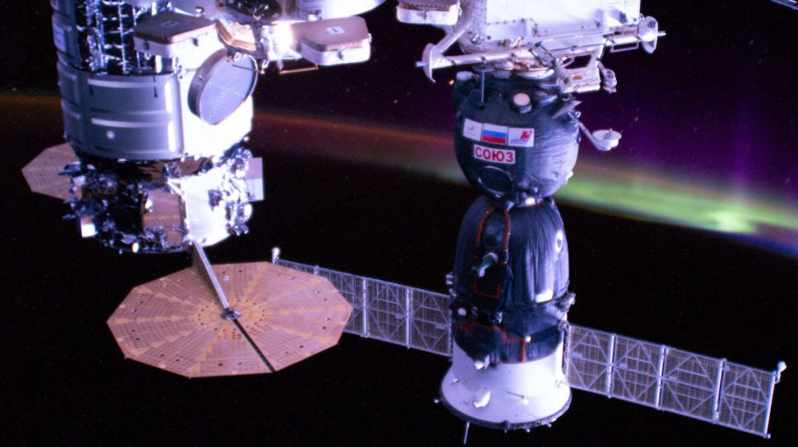
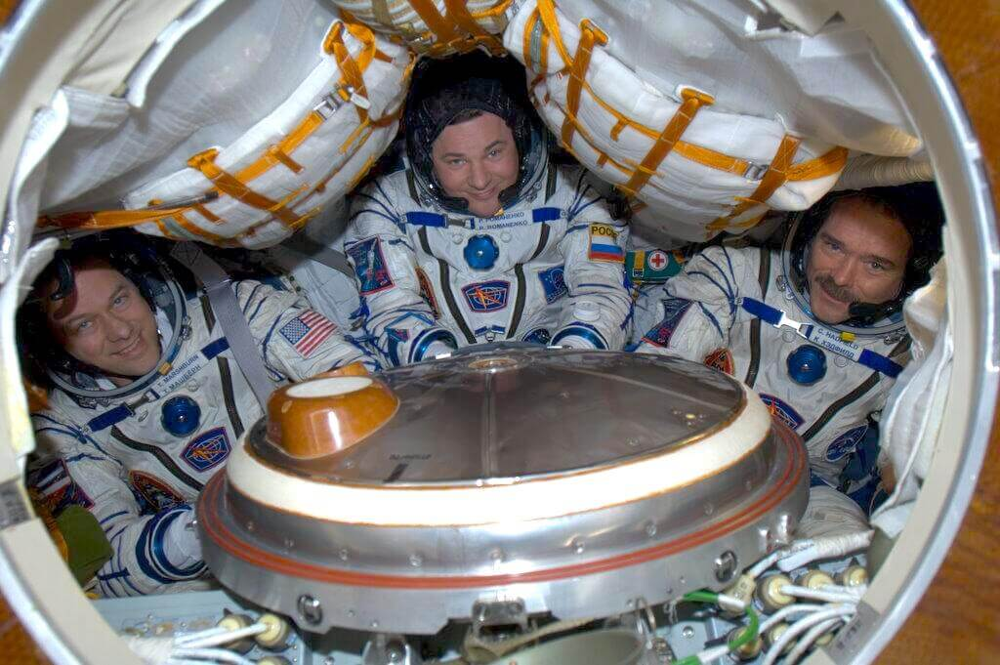
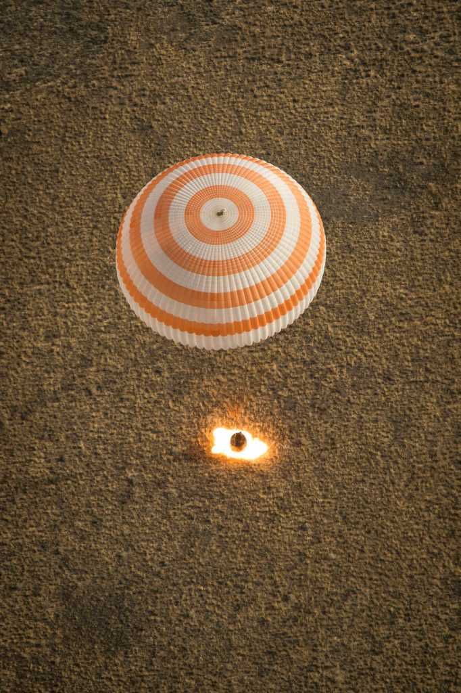

လက်ရှိကာလ အထိတော့ အပြည်ပြည် ဆိုင်ရာ အာကာသ စခန်းက အာကာသ ယာဉ်မှူးတွေဟာ ကမ္ဘာကို ပြန်ဖို့ ရုရှားရဲ့ ဆိုယု (Soyuz) အာကာသ ယာဉ်ကို အဓိက အသုံးပြု နေကြပါတယ်။ နောင်မကြာမီ ကာလမှာ SpaceX ရဲ့ အာကာသ ယာဉ်ကို ပုံမှန် အနေနဲ့ အသုံးပြု လာမှာ ဖြစ်ပေမယ့် လက်ရှိ အချိန်ထိတော့ ဆိုယု အာကာသ ယာဉ်ကိုပဲ အဓိက အသုံးပြုနေကြဆဲ ဖြစ်ပါတယ်။
(မှတ်ချက်။ ဆိုယု အပြင် Dragon SpaceX အမှတ် ၁ နဲ့ ၂၀၂၁ ဧပြီလက ဆင်းခဲ့ပြီး အခု နိုဝင်ဘာ လဆန်းက အမှတ် ၂ နဲ့ ပြန်ဆင်းခဲ့ ပါတယ်။ SpaceX Crew-3 အဖွဲ့ကတော့ ပြီးခဲ့တဲ့ ၂၀၂၂ မေလကပဲ အောင်မြင်စွာ ပြန်လည် ဆင်းသက် လာခဲ့ပါတယ်။ ဒီ SpaceX Crew missions တွေ အကြောင်းက နောက်ထပ် ဆောင်းပါး သပ်သပ် ရေးပါမယ် ခင်ဗျာ။)
ဆက်စပ်ဆောင်းပါး – SpaceX Crew-3 အောင်မြင်စွာ ပြန်လည်ဆင်းသက်
ကမ္ဘာပေါ် ပြန်ဆင်းတာ ထင်သလောက် မလွယ်ပါဘူး။ အလွန် အန္တရာယ် များတဲ့ လုပ်ငန်းစဉ် ဖြစ်ပါတယ်။ ဒီလို ပြန်ဝင်စဉ် ယာဉ်ပျက်စီးပြီး အသက်ဆုံးရှုံး ခဲ့ရတဲ့ သာဓကတွေ ရှိခဲ့ပါတယ်။
ကမ္ဘာ့လေထု ထဲကို ပြန်ဝင်ပြီး ကမ္ဘာပေါ်ကို ဘေးအန္တရာယ် ကင်းကင်း နဲ့ ပြန်ဆင်းနိုင်ဖို့ ကမ္ဘာ့ ဆွဲငင်အား ဘယ်လို အလုပ်လုပ်လဲ၊ လေထုရဲ့ ခုခံအားက ဘယ်လို အလုပ်လုပ်လဲ ဆိုတာတွေကို သိနားလည်ဖို့ လိုအပ်ပါတယ်။
ကမ္ဘာကို ပြန်ဝင်ဖို့ လိုအပ်တဲ့ အချက်အလက် တွေကို မြေပြင်မှာ ရှိတဲ့ ground command မြေပြင်ထိန်းချုပ်ရေး က နေ အသေးစိတ် တွက်ချက် ရပါတယ်။ တွက်ချက်မှုတွေ အားလုံး မှန်ကန် နေသည့်တိုင်အောင် ပြန်ဆင်းတဲ့ အချိန်မှာ လေထုရဲ့ ပွတ်တိုက်အားကြောင့် အာကာသ ယာဉ်ဟာ အရမ်းပူပြီး မီးကျီးခဲလို ရဲတောက် လာပါတယ်။ အတွက်အချက် နဲနဲလေး လွဲသွားခဲ့မယ်ဆို ပြန်ဝင်တဲ့ အချိန်မှာ အရည်ပျော် ကျသွားတာ မျိုး ဖြစ်နိုင်သလို ပြန်ဝင်တဲ့ ထောင့်မမှန် တဲ့အတွက် လေထုနဲ့ ရိုက်မိပြီး အာကာသ ထဲကို လွင့်ထွက် သွားတာမျိုးလဲ ဖြစ်နိုင်ပါတယ်။

အာကာသ ယာဉ်မှူးတွေ ပြန်ဆင်းတဲ့ အချိန် ထိုင်မယ့် ထိုင်ခုံတွေဟာ တစ်ဦးချင်း စီအတွက် ကိုယ်တိုင်းယူပြီး ပြုလုပ်ထားရတာ ဖြစ်ပါတယ်။ ပြန်ဆင်းတဲ့ အချိန် ဖြစ်ပေါ်လာတဲ့ ပြင်းထန်တဲ့ တုန်ခါမှုတွေကြောင့် ထိခိုက်ဒါဏ်ရာရမှု မရှိအောင် ယာဉ်မှူးတွေကို ထိုင်ခုံမှာ သေချာ တုပ်နှောင်ထားရပါတယ်။ ဒါ့အပြင် ယာဉ်မှူးတွေ အားလုံးဟာ ကြီးမားလေးလံတဲ့ အာကာသ ဝတ်စုံကြီးတွေကိုလဲ ဝတ်ဆင်ထားကြ ရပါတယ်။
မဆင်းခင် ၁ ပတ်လောက် ကတဲက ပြန်ဆင်းမယ့် ယာဉ်မှူးတွေဟာ ပြန်ဆင်းတဲ့ အဆင့်တွေကို ထပ်ခါ ထပ်ခါ လေ့ကျင့်ကြရပါတယ်။ လေ့ကျင့် ထားတဲ့ အတိုင်း သတ်မှတ်ချိန်မှာ ဆိုယု ယာဉ်နဲ့ အပြည်ပြည် ဆိုင်ရာ အာကာသ စခန်းနဲ့ ချိတ်ဆက်ထားတဲ့ ချိတ်တွေကို ဖြုတ်ချ လိုက်ပါတယ်။ ဆိုယုယာဉ် တဖြည်းဖြည်း ဝေးသွားတဲ့ အချိန်မှာ မြေပြင် စခန်းကနေ ဆင်းဖို့ လိုအပ်တဲ့ နောက်ဆုံးတွက်ချက်ထားတဲ့ လမ်းကြောင်း အချက်အလက်တွေကို ယာဉ်ရဲ့ ကွန်ပြူတာထဲကို ထည့်သွင်းပေးပါတယ်။
ကမ္ဘာ့လေထုထဲ ဝင်ရောက်ဖို့ဆိုရင် အရင်ဆုံး အာကာသ ယာဉ်ကို အရှိန်လျှော့ချ ရမှာ ဖြစ်ပါတယ်။ ဒီ့အတွက် အာကာသ ယာဉ်ရဲ့ ရှေ့ဖက်က ဒုံးစက်တွေကို နှိုးပြီး တဖြည်းဖြည်း အရှိန် လျှော့ချ လိုက်ပါတယ်။ ဒီလို လျှော့ချတဲ့ အခါမှာ အရှိန်နည်းသွားလို့ ကမ္ဘာ့လေထုထဲ ကျလာမယ့် နေရာကို အတိအကျ သေချာ တွက်ချက် ယူရပါတယ်။

ဒီလို ပြုတ်ကျပြီး ကမ္ဘာ့လေထုထဲ မဝင်ရောက်မီ မိနစ်ပိုင်း အလိုမှာ ဆိုယုယာဉ်ဟာ သုံးပိုင်း ပြုတ်ထွက် သွားပါတယ်။ လူမပါတဲ့ အပိုင်း နှစ်ပိုင်းက လေထုထဲ လောင်ကြွမ်း ဝင်ရောက် ပြီး ပျက်စီး သွားပါတယ်။ လူပါတဲ့ ဆင်းယာဉ် ကတော့ ကမ္ဘာ့ လေထု ထဲကို အရှိန်အဟုန်နဲ့ ဝင်ရောက် သွားပါတယ်။
ကမ္ဘာ့လေထုထဲကို ပြန်လည် ဝင်ရောက်တဲ့ အချိန်မှာ လေရဲ့ ပွတ်တိုက်မှုကြောင့် အာကာသယာဉ်ရဲ့ အပြင်ဖက် ကိုယ်ထည်ဟာ အရမ်းပူလာပါတယ်။ ဒီ အပူကို ကာကွယ်ဖို့ အပူကာ တွေကို ယာဉ်ရဲ့ ပြင်ပ မျက်နှာပြင်မှာ ကပ်ပြီး တပ်ဆင်ထားရပါတယ်။
ဒီ အပူကာ တွေဟာ အပူရှိန် မြင့်လာရင် ပြုတ်ထွက်သွားအောင် စီမံ ထားပါတယ်။ ဒီနည်းအားဖြင့် အပူကာက အပူချိန်ဟာ ယာဉ်ပေါ်ကို မရောက်ရှိတော့ပါဘူး။ အပူကာ ပြားတွေ အမြောက်အများ တပ်ဆင် ထားတာမို့ ဆင်းတဲ့ အချိန်မှာ တောက်လျှောက် ပြုတ်ထွက်နေပါတယ်။
ကမ္ဘာမြေပြင် အထက် ကီလိုမီတာ ၈.၅ လောက် ရောက်တဲ့ အချိန်မှာ လေထီးတွေ ပွင့်သွားပါတယ်။ ဒီလေထီးတွေက ယာဉ်ရဲ့ ဆင်းနေတဲ့ အရှိန်ကို နှေးသွားအောင် ပြုလုပ် ပေးပါတယ်။ သိပ်မကြာမီ မှာပဲ ဆိုယုယာဉ် နဲ့ ယာဉ်မှူးများဟာ ကမ္ဘာပေါ် ပြန်လည် ရောက်ရှိလို့ လာပါတယ်။

ဆိုယုယာဉ်တွေ မြေပြင်နဲ့ မထိမီ အရှိန်ထပ်ပြီး နှေးအောင် အောက်ခြေမှာ တပ်ဆင် ထားတဲ့ ဒုံးစက်တွေကို စက္ကန့်ပိုင်းလောက် နှိုးပြီး အရှီန် သတ်ပေးပါတယ်။
ဆိုယုနဲ့ ပြန်ဖူးတဲ့ အာကာသ ယာဉ်မှူးတွေရဲ့ ပြန်ပြောင်း ပြောပြချက် အရတော့ ဆိုယု အာကာသ ယာဉ်နဲ့ ကမ္ဘာပေါ်ကို ပြန်ဆင်းရတာဟာ “အလွန် ကြမ်းတဲ့ လမ်းမှာ အမြန်မောင်းနေတဲ့ ကားတစ်စင်းက လမ်းတစ်လျှောက်လုံး လမ်းဘေးက ဓါတ်တိုင်နဲ့ သစ်ပင်တွေကို ဆက်တိုက် ဝင်တိုက်ပြီး မရပ်မနား မောင်းနေတာနဲ့ တူတယ်” လို့ တင်စား ပြောကြပါတယ်။
Reference:
How do astronauts get home? | BBC
How to Leave Space and (Safely) Crash Back Down to Earth | Wired